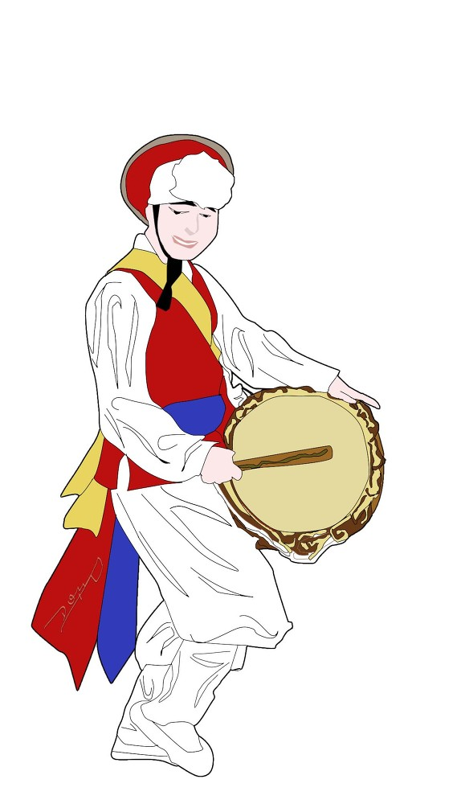

|  |
1학기 동안 주제를 선정하여 글을 써보는 시간이 있어 '전통체험공간의 활성화 방안' 이라는 주제로 논문 형식의 글을 써보았습니다. 실제로 요즘 많은 전통체험공간에 사람들의 발길이 점점 끊기고 있는데, 이에 반해 한국민속촌, 안동 하회탈마을 등 인기가 많은 전통체험공간들을 분석해 어떻게 하면 다른 전통체험공간 또한 살려낼(부흥시킬)수 있는지에 대한 글을 작성하였습니다.
전문은 여기(링크)를 눌러 다운로드하여 보실 수 있습니다. |
|
사업계획서를 써보는 과제가 있었는데, 내가 예전부터 구상해본 아이템인 '라이프 슈즈'를 주제로 사업계획서를 써보았습니다. 신발 안에 내장된 칩이 부착돼있어 이 칩을 통해 착용자의 건강을 분석하여 독거노인이나 1인가구 등의 사람들의 건강에 문제가 생겼을때 병원이나 친척들에게 연락이 가도록하는 시스템을 만들고자 하였습니다.
전문은 여기(링크)를 눌러 다운로드하여 보실 수 있습니다. |